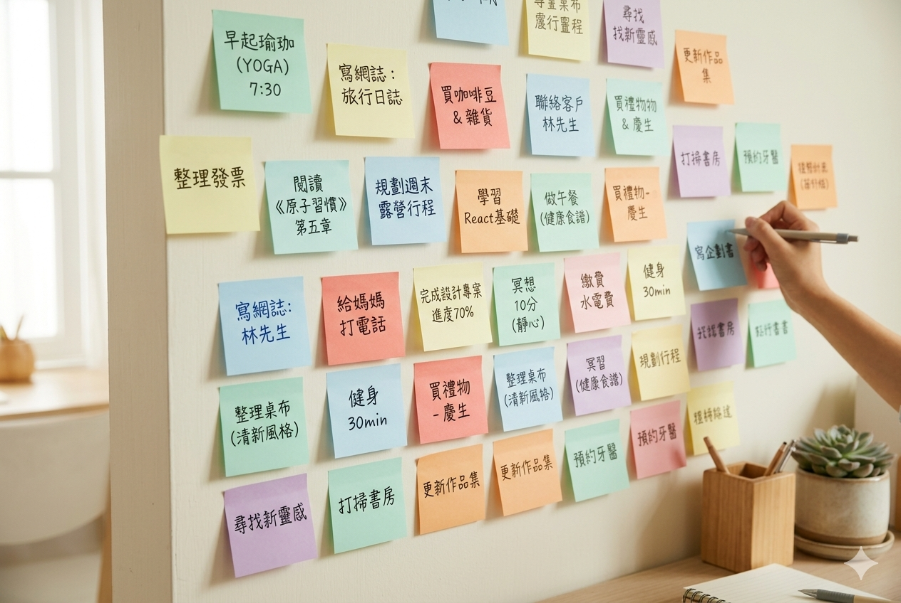
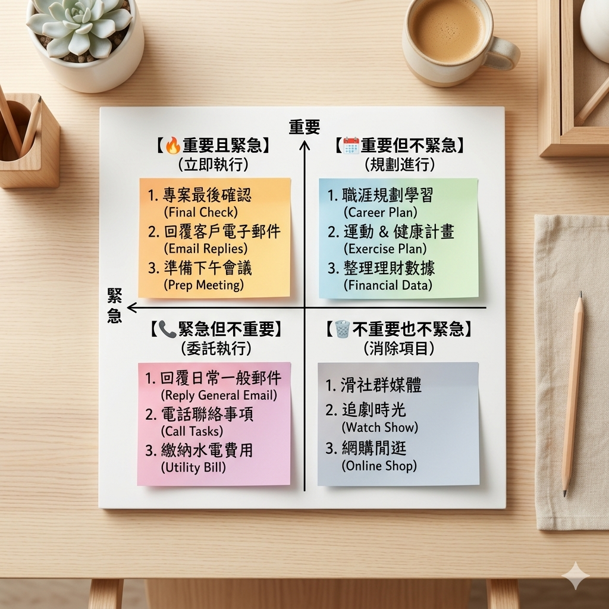

你有沒有這種經驗：明明覺得自己一整天很忙，到了晚上卻想不起來到底做了什麼；重要的事情老是拖到最後一刻，還常常漏掉該回的訊息、該繳的帳單。問題通常不是你不夠努力，而是——你把太多事情放在腦袋裡。
大腦很適合用來「思考」，但很不適合用來「記事情」。今天就分享一套簡單的任務管理方法，幫你把生活理清楚。
第一步：把腦袋清空
任何任務管理的起點，都是把腦中所有的事情倒出來，一件都別留。這個動作有個名字叫「brain dump」，做法很單純：
- 拿出紙、備忘錄或任何工具
- 把「該做、想做、擔心會忘」的事全部寫下來
- 不用管順序、不用分類，先寫再說
從「今天要回的 email」到「哪天該換冷氣濾網」，通通丟出來。你會發現，光是把它們寫下來，心裡就輕鬆一大半——因為大腦終於不用一直提醒你了。

第二步：分清楚「重要」和「緊急」
清單列出來後，接著要分類。最好用的一個工具，是把任務依「重要 / 緊急」分成四類：
| 緊急 | 不緊急 | |
|---|---|---|
| 重要 | 馬上做 | 排時間做 |
| 不重要 | 快速處理或請人幫忙 | 能刪就刪 |
多數人整天都在忙「緊急但不重要」的雜事，真正重要但不緊急的事（運動、學習、陪家人）反而一直被延後。任務管理的關鍵，就是刻意留時間給右上角那格。

第三步：一次只專注幾件事
清單再長，一天能做的也有限。與其被一長串待辦壓得喘不過氣，不如每天早上只挑 3 件最重要的事，先把它們完成。
這樣做有兩個好處：
- 有明確目標：不會一整天瞎忙。
- 有成就感：勾掉那 3 件，今天就算及格，剩下的都是加分。
第四步：把它交給一個系統，別靠記憶
方法再好，如果散落在腦袋、便利貼、各種 App 裡，還是會亂。所以最後一步，是把所有任務集中到一個地方管理。一個好的任務系統應該能幫你：
- 隨手新增任務，想到就丟進去
- 標記重要程度與截止日
- 分專案／分類（工作、家庭、個人）
- 一眼看到「今天該做什麼」
當你信任這個系統，就不用再花力氣去「記得」，可以把腦力留給真正重要的思考與判斷。
任務管理的目標，不是把自己塞滿行程，而是讓你清楚地選擇要把時間花在哪、並且安心地放下其他事。
我自己是怎麼做的
因為找不到完全順手的工具，我後來乾脆自己做了一套任務追蹤軟體，把上面這幾件事整合在一起：快速收集、分類、標記優先度、每天列出重點。用了之後最大的感受是——腦袋真的變清爽了，因為不用再擔心漏掉什麼。
之後我會再寫一篇，細講這套軟體實際怎麼操作。但工具其實是其次，先養成「把事情倒出來、分好類、逐一完成」的習慣，才是關鍵。
今天就從最簡單的 brain dump 開始吧，先把腦袋清空，你會發現生活其實沒那麼亂 🐾